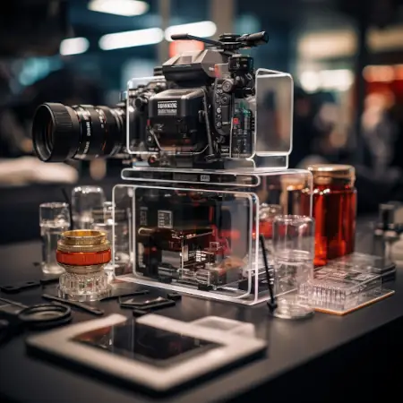

Изготовление изделий из пластика и оргстекла
"Оргалит Плюс" - ваш надежный поставщик качественного оргстекла. Мы предлагаем широкий ассортимент продукции для самых разнообразных нужд – от промышленного производства до домашнего декора.
Наши Продукты:
Листы оргстекла различной толщины и размера, идеально подходящие для использования в строительстве, рекламе и производстве мебели.
Изделия из оргстекла на заказ: стойки, защитные экраны, подставки для товаров и многое другое.
Производственные услуги: резка, гравировка, термоформование для создания уникальных изделий по вашим чертежам и эскизам.